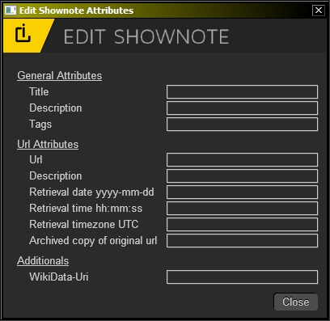
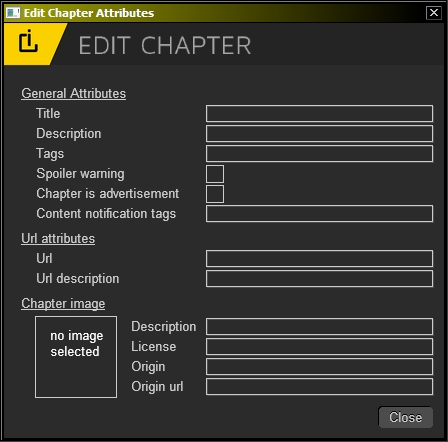
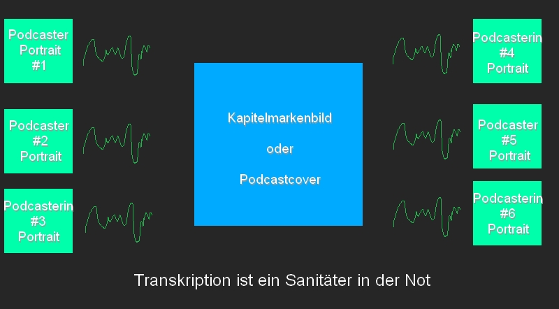
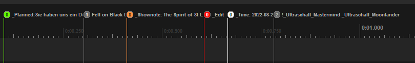
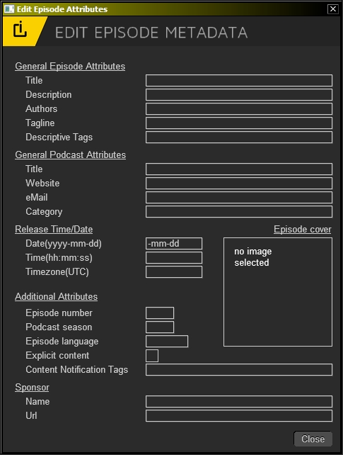

Die Entwicklung von Podcast-Metadaten-Export in Ultraschall ist ein Großprojekt, daher hab ich mich dazu entschlossen es etwas zu entzerren und in einige Entiwcklungsschritte aufzuteilen, die da wären:
Phase 1:
Phase 2:
Phase 3:
Phase 4:
In dieser ersten Version geht es erstmal um die Features von Phase 1 und diese gemeinsam mit Euch zu entwickeln.
Diese besteht aus diversen neuen Features. Zum Einen gibt es, zusätzlich zu Kapitelmarken, die Möglichkeit Shownotes zu erstellen. Beide, Kapitelmarken und Shownotes, haben einen eigenen Dialog, in dem Ihr die wichtigsten Attribute dafür eintragen könnt, also z.B. Bilder bei Kapitelmarken oder URLs bei Shownotes. Darüberhinaus gibt es noch einen Dialog für das Eingeben von Metadaten für den Podcast/die Episode. Dieser Dialog ist quasi eine Erweiterung des bisherigen Dialogs, wo Ihr Titel, Podcastnamen, Veröffentlichungsjahr, etc eingetragen habt. Erreichbar ist dieser über den Export Assistant. Als kleines Bonus, um Euch zu zeigen was hiermit alles möglich ist, hab ich noch einen Export gebaut, der es ermöglicht Kapitelmarken mit den dazu gehörigen Shownotes als HTML-Liste zu exportieren, die Ihr einfach Copy n Pasten könnt in den Episodenbeitrag.
Auch gibt es nun ein Kontextmenü für Marker, mit passenden Einträgen für den jeweiligen Markertyp, also Kapitelmarke, geplante Kapitelmarke, Shownotes, Edit-Marker, Time-Marker und Action-Marker. Musstet Ihr also für diverse Bearbeitungen immer umständlich mit diversen Dialogen oder mit Shortcuts rumhantieren, so könnt Ihr einfach rechtsklick auf eine Kapitelmarke machen und dort auswählen "Edit Chapter". Dann öffnet sich ein Dialog für diese Kapitelmarke, wo Ihr alles eintragen könnt.
Gehen wir also etwas in die Tiefe und fangen wir an mit Shownotes.
Neue Shownotes könnt Ihr erstellen mit dem Shortcut T bzw Shift+T zusammen mit einem Eingabedialog. (Diese Shortcuts können sich eventuell später noch ändern.)
Nehmt Ihr Shift+T, öffnet sich damit der folgende Shownote-Dialog:

Wie Ihr seht, könnt Ihr eine Reihe an Attributen setzen, die sich in(bisher) drei Kategorien aufteilen:
General Attributes:
Das sind ein paar generelle Infos zu der Shownote, wie der Titel(wird später auch im Marker direkt angezeigt), eine Beschreibung, worum es in dieser Shownote geht und ein paar Tags, die sinnvoll noch angegeben werden, aber eine Beschreibung aufblähen würden.
URL Attributes:
Hier kommen nun die URL-Attribute rein. Allen voran: die URL selbst. Dann eine Beschreibung dessen, was sich hinter der URL verbirgt, einige Daten wie Datum, Zeit, Zeitzone, wann Ihr die URL abgerufen habt.
Darüberhinaus noch die Möglichkeit eine archivierte Version der URL zu hinterlegen. Letzteres ist speziell für journalistische Formate wichtig, da sich der Inhalt hinter einer URL ändern kann. Seiten wie archive.org erlauben es aber, dass man einen Snapshot der URL zu einem bestimmten Zeitpunkt macht. Diese URL zum Snapshot öffnet eine Seite, die den Inhalt exakt so präsentiert, wie er zum Zeitpunkt des Snapshots war.
Diese URL könnt Ihr hier nun angeben um zu beweisen, dass der Inhalt, auf den Ihr Euch bezieht, wirklich hinter der URL vorhanden war, selbst wenn der Inhalt hinter der OriginalURL geändert wurde. Das ist wichtig für journalistische Nachvollziehbarkeit der Quellen. Viele Journalist_innen arbeiten damit in ihrem Alltag, also gehört dies auch in Shownotes.
Additionals:
Dieser Teil ist noch relativ unbespielt und beinhaltet ein Feature, welches sich Tim einstmals gewünscht hat: das Angeben von Wikidata-URIs.
Wikidata-URIs sind Adressen, die in einer Datenbank der WikiMedia-Foundation existieren. Zu diesen Adressen werden viele zusätzliche, maschinenlesbare, Attribute mit angeboten.
Als ein Beispiel mag dienen, dass man die WikiData-URI von Leipzig hier angeben kann. Ein PodcastPlayer könnte nun einige der zusätzlichen Attribute visualisieren wie Einwohnerzahl. Oder die geographische Lage so abrufen um Leipzig in Google Maps zu öffnen. Oder das Wappen von Leipzig als "Shownote-Bild" anzuzeigen.
Viele Dinge haben eine URI in der WikiData-Datenbank. So auch Tim Pritlove selbst. Seine WikiData-URI lautet beispielsweise: https://www.wikidata.org/wiki/Q102053
Wenn Ihr mehr dazu wissen wollt, könnt Ihr dazu passende Podcastfolgen hören wie den CRE 205 oder Forschergeist 44.
Notiz: macht es Sinn, WikiCite mit dazu zu packen? Damit kann man Zitate und bibliographische Infos referenzieren. Ich wäre neugierig auf Eure Gedanken dazu.
Zum Eingeben der Infos klickt Ihr auf die Textfelder. Bisher öffnet sich dafür noch ein gesonderter Dialog. Das ist noch meh aber (noch) nicht zu vermeiden. Ich versuche es zu umschiffen und es direkt eingebbar zu machen, aber speziell unter Windows hat Reaper einige Bugs, die es u.U. verhindern so etwas wie @ oder € einzugeben. Der derzeitige Ansatz ist da der Einzige um das 100% zu lösen.
Wenn Ihr fertig seid, könnt Ihr auf Done klicken oder die ESC-Taste.
Hier ist vieles wie gehabt. Ihr setzt mit M eine Kapitelmarke, mit B eine geplante Kapitelmarke und mit Shift+M eine Kapitelmarke, deren Attribute Ihr verändern könnt.
Wenn Ihr mit Shift+M eine Kapitelmarke setzt, so öffnet sich ein ähnlicher Dialog, wie Ihr ihn bereits von den Shownotes gesehen habt:

Auch hier seht Ihr, dass es mehrere Kategorien gibt, in die sich die Metadaten aufteilen.
General Attributes
Dort tragt Ihr den Titel ein(der dann auch im Marker angezeigt wird), eine Beschreibung, worum es in dem Kapitel geht, ein paar Tags, die das Kapitel beschreiben. Es gibt auch zwei Checkboxen, mit denen Ihr angeben könnt, ob ein Kapitel Spoiler enthält(und man es deswegen lieber skippen möchte) und ob ein Kapitel Werbung ist.
Zu guter Letzt könnt Ihr noch ein paar Tags angeben, die vor bestimmten Inhalten warnen. Das ist speziell im Hinblick auf den Werther Effekt wichtig.
Url-Attributes
Hier könnt Ihr die bereits aus Ultraschall 4 & 5 bekannten Kapitelmarken-URLs eintragen. Ich bin allerdings nicht so sicher ob die Sinn ergeben, da meiner Meinung nach, Urls eher in Shownotes etwas zu suchen haben
Ich bin offen für Gedanken zum Thema.
Auch hier: Ihr könnt eine URL angeben und eine Beschreibung, was hinter der Url zu finden ist.
Chapter Image
Hier geht es um das Kapitelmarkenbild. Das könnt Ihr einfach per Drag n Drop in das Fenster fallen lassen. Oder Ihr klickt mit links darauf um ein Neues zu wählen.
Es gibt auch ein Kontextmenu, welches Ihr mit Rechtsklick erreicht. Dort findet Ihr die Möglichkeit das Bild zu entfernen oder es in der Standard-Applikation zu öffnen, um eventuell eine Nachbearbeitung zu machen.
Auch findet Ihr einige Attribute, mit denen Ihr die Quellen und Lizenzen für die verwendeten Kapitelmarkenbilder angeben könnt(was bisher in Ultraschall fehlt und das Potenzial hat, juristische Konsequenzen nach sich zu ziehen).
Zu beachten ist: dass dieser Ansatz mit Kapitelmarkenbildern den bisherigen Ansatz ersetzt, bei dem das Bild in die Timeline gedropped wurde. Ihr dropped die Bilder nun stattdessen in den Dialog für die Kapitelmarke.
Dabei wird eine Kopie der Grafikdatei im Projektverzeichnis erstellt und diese mit dieser Kapitelmarke verknüpft. Das heißt, wenn Ihr die Kapitelmarke bewegt, bewegt sich automatisch das Bild mit, was bisher nicht möglich war.
Nun gibt es gute Gründe die Bilder, so wie bisher, direkt im Projekt zu haben. Speziell wenn man den Podcast als Video exportieren will. Das wird zu einem späteren Zeitpunkt wieder möglich sein, indem man einzelne oder alle Kapitelmarkenbilder in einen neuen Track einfügen kann(das war schon für jetzt geplant, aber ich muss noch einige Bugs in meinem Code fixen, kommt daher etwas später.) Dazu wird es einen speziellen Menüpunkt im Kontextmenü für Kapitelmarken geben, der das Euch ermöglicht.
Ein weiterer Punkt, der mit dem bisherigen Ansatz besser war ist: es ist einfacher die Bilder schnell ins Projekt fallen zu lassen ohne dafür umständlich Dialoge nutzen zu müssen. Das wird in Zukunft mit dem neuen Markermanager möglich sein, das heißt: Ihr dropped die Bilder nicht mehr in die Timeline Eures Projektes, sondern stattdessen in die entsprechende Kapitelmarke direkt im Markermanager.
Die Gründe für diese Änderung sind vielfältig und sprengen den Rahmen in dieser Erklärung. Kurz zusammengefasst aber ist dieser Ansatz performanter, stabiler, hat weniger Stolperstellen über die Nutzer_innen stolpern können ohne zu wissen, wie sie diese umschiffen können.
Das Markerdashboard kann z.B. so schneller werden, was für langsame Systeme wichtig ist. Auch fallen viele Supportanfragen weg, die bisher im Sendegate auftauchen(z.B. Bild ist an Kapitelmarke, wird aber vom Marker Dashboard nicht erkannt, etc).
Ein weiterer Grund ist, dass der bisherige Ansatz eine Weiterentwicklung mit neuen Feaures zu Kapitelmarkenbildern schlichtweg einfach komplizierter oder unmöglich macht. Ein solches Feature wäre ein sauberer Video-Export von Podcasts. Was mir vorschwebt sind mehrere Layouts für Video-Export von Podcasts. Sprich, wir ordnen Bilder von Sprecher_innen im Video an, machen eine Wellenform daneben, so dass man immer sieht, wer gerade redet. Und in der Mitte die entsprechenden Kapitelmarkenbilder, sauber gelayoutet und skaliert und eventuell Transkription unten eingeblendet.
Das könnte grob so aussehen

Um so etwas möglich zu machen, brauchen wir aber eins: die volle Kontrolle über alle Bilder im Projekt. Und das ist mit dem bisherigen Ansatz kaum bis gar nicht machbar und würde ein solches Feature so schwer zu realisieren machen, dass es sehr viel Zeit bräuchte oder sogar besser wäre es gar nicht zu machen.
Ich weiß, Paradigmenwechsel sind immer etwas meh und ungewohnt, aber die Features die dadurch möglich werden, werden Euch entschädigen, versprochen.
Ich werde noch etwas bauen, dass die Kapitelmarkenbilder von bisherigen Projekten direkt beim Laden in die Kapitelmarken eingefügt werden. So müsst Ihr da nix per Hand machen, wenn Ihr mit einem Ultraschall 4 & 5 Projekt in (voraussichtlich) Ultraschall 6 arbeiten wollt.
Ihr seht, vieles ist identisch zu Shownotes und ein wenig ändert sich zu Kapitelmarkenbildern.
Für diese gelten die gleichen Möglichkeiten, wie für Kapitelmarken. Das heißt, Ihr könnt die geplanten Kapitelmarken einfügen ins Projekt und dann (per rechtsklick) im Attribute-bearbeiten-Dialog deren Attribute bearbeiten, inklusive der Kapitelmarkenbilder.
Wenn Ihr also alle Infos bereits vor der Sendung zusammen habt, so könnt Ihr diese komplett angeben und müsst es nicht während der Sendung machen oder in der Nachbearbeitung.
Sprich: wenn Ihr diese gesetzt und mit Attributen versehen habt, braucht Ihr nur noch B drücken, um die geplante Kapitelmarke zu setzen und alle Attribute werden mitgesetzt.
Es gibt nun Kontextmenüs für die verschiedenen Markertypen. Das heißt, je nach Markertyp(Kapitelmarke, geplante Kapitelmarke, Shownote, Editmarke, Zeitmarke, Actionmarker) gibt es sinnvolle Einträge, die für diesen Markertypen Sinn ergeben.
Im folgenden Gif seht Ihr die verschiedenen Einträge, die zu den jeweiligen Markern existieren.

In der Hauptsache sind dies Dinge wie Attribute bearbeiten(für (geplante) Kapitelmarken und Shownotes) oder den Titel(Edit-Marker), die Zeitanzeige starten(für _Time-Marker) sowie Actions aussuchen für Action-Marker.
Oder einfach nur das Entfernen dieses Markers.
Die Einträge, die Ihr dort findet, sind nicht fix. Falls Ihr also Ideen habt, was dort noch rein sollte, oder was eher keinen Sinn ergibt, bin ich offen für Vorschläge und Ideen. Alles was das Arbeiten mit bestimmten Markertypen leichter machen könnte, sollten wir hier durchaus mal ausprobieren.
Natürlich haben nicht nur Kapitelmarken und Shownotes Metadaten, sondern die ganze Episode an sich auch.
Deswegen gibt es einen neuen Dialog, in dem Ihr Metadaten für die Episode angeben könnt.

Auch hier seht Ihr diverse Kategorien, in welche die Episodenattribute eingeteilt sind.
General Episode Attributes
Hierbei handelt es sich um Attribute, die diese aktuelle Episode betreffen, also Titel, eine Beschreibung, die Podcastenden, eine Tagline und beschreibende Tags zu grob den Themen der Episode.
General Podcast Attributes
Hier kommen Attribute rein, die den gesamten Podcast betreffen und nicht nur die einzelne Episode. Also Titel des Podcasts, die Website des Podcasts, Kontakt-eMail und die Kategorie.
Zukünftig sollen auch noch Social-Media-Accounts dazu kommen, aber daran arbeite ich noch.
Release Time/Date
Die Infos, wann die Episode rauskommen soll und wird, also Datum, Zeit und Zeitzone.
Additional Attributes
Hier kommen Dinge rein, die die Episode etwas innerhalb des Podcasts verorten, wie Episoden-Nummer, Season-Nummer(falls Ihr Euren Podcast in Staffeln aufteilt), die Sprache des Podcasts(da werden noch weitere Sprachen dazu kommen), ob es explizite Sprache gibt und eventuelle Content-Notification Tags, die vor bestimmten Inhalten warnen können(also auch hier z.B. den Werther Effekt verhindern sollen).
Sponsor
Hier kommt der Name des Sponsors der gesamten Episode rein und eine Url zu diesem. Ich bin noch nicht sicher, ob es nicht sinnvoll ist es hier zu entfernen und nicht sinnvoller ist, stattdessen ein Sponsored-Tag in Shownotes einzubauen. Speziell weil manche Podcasts mehrere Werbepartner_innen haben pro Episode. Da wäre ich offen für Eure Gedanken dazu...
Episode Cover
Das Episoden-Cover, welches Ihr auch hier drag n droppen könnt oder mit links-klick einen Dialog öffnen. Ihr könnt es auch weiterhin im Export Assistant auswählen. Es ist auch möglich mit rechtsklick ein Kontextmenü zu öffnen um das Cover zu entfernen oder in der Default-App zu öffnen(zum Bearbeiten z.B.).
Noch ein paar generelle Anmerkungen: in Zukunft wird dieser Dialog Euch Presets ermöglichen. Sprich, Ihr werdet die Attribute, die Ihr eh für alle Episoden eines Podcasts braucht, in nem Preset speichern können um sie schnell abrufen zu können. Das wird mit dem neuen Exportassistant kommen und Euch nochmal lästige Sachen ersparen.
Sämtliche Attribute dieses Dialogs könnt Ihr auch als Project-Template abspeichern.
Es werden noch nicht alle Attribute des Dialogs für den Export genutzt, dies wird aber zukünftig der Fall sein(spätestens ab Phase 3). Es lohnt sich also das Erfassen schon jetzt.
Nun haben wir ne Menge an Eingabe für Metadaten durchgemacht, aber wie sieht es denn jetzt damit aus, diese Daten irgendwie auch weiterverwenden zu können?
Dafür hab ich einen rudimentären Export gebaut, der Euch die Kapitelmarken und die dazugehörigen Shownotes als HTML-Code exportiert. Das heißt, Ihr bekommt eine gelayoutete Liste, in der die Kapitel mit Zeitmarken und Beschreibung drin sind, die Shownotes mit Zeitmarken, Beschreibung und URLs(inklusive archived Urls, wenn Ihr diese angegeben habt!). Diese könnt Ihr dann einfach in Euren Episodenartikel einbinden und voila, habt Ihr die Shownotes zumindest schonmal anzeigbar.
Das ist, wie gesagt, eher noch rudimentär und noch ausbaufähig. Es soll Euch aber schon einmal vermitteln, was zum Beispiel möglich sein kann und wird, aber dem sind an sich kaum Grenzen gesetzt. Falls Ihr also da Wünsche und Ideen habt, immer her damit.
Speziell, wie man andere, von Euch eingebenene, Metadaten dort sinnvoll und übersichtlicht visualisieren kann(Spoiler Warnung, Kapitel ist eine Ad, WikiData-URI, Datum und Zeit des Abrufs der Shownote-Url usw).
Was ich auch eingebaut habe sind ein paar CSS-Klassen für die einzelnen Elemente. Wer von Euch also sich die Shownotes mit CSS etwas gesondert layouten will, kann sich damit mal austoben.
Den Export findet Ihr auch im Export-Assistant unten, unter dem Finalize MP3-Button.
Nun habt Ihr einen groben Überblick darüber, was Phase 1 beinhaltet. Es umfasst so in etwa 30% dessen, was zum Ende geplant ist, ermöglicht Euch aber schon Einiges.
Was gilt es also nun konkret zu testen?
Dialoge
Marker Menu
Export as HTML-Liste
Generell
Ideen und Feedback